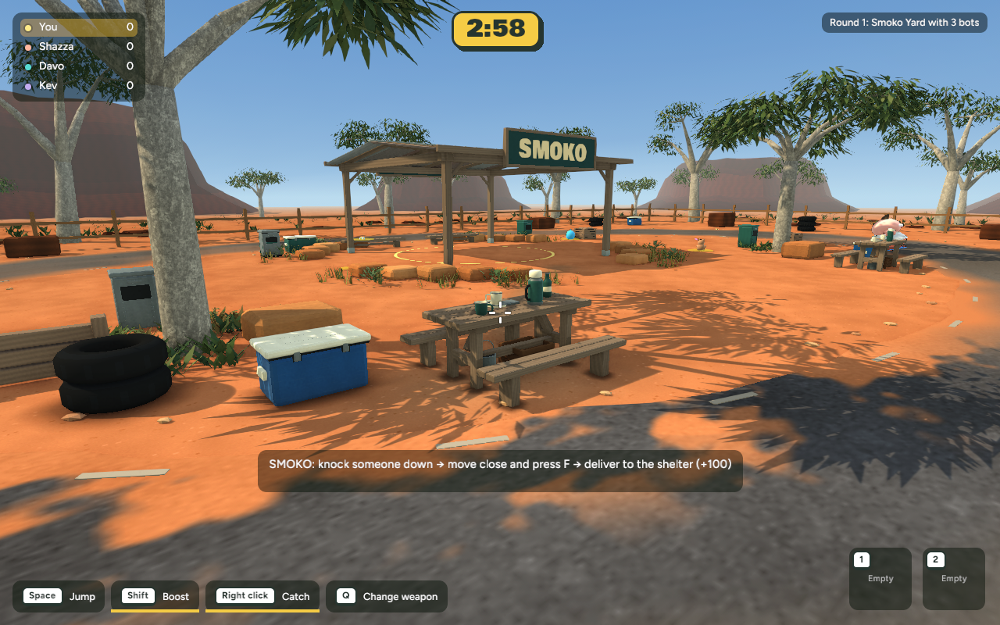
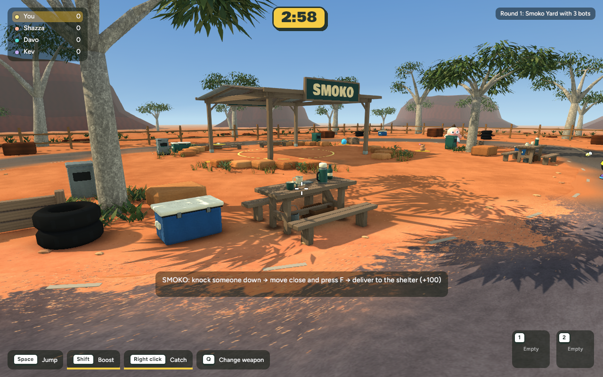

Compare the playable picnic bend with the road in the original Bush Servo concept. Both game captures use the same camera.


Recorded in Chrome from the running local WebGPU build. Solo Smoko, zero bots.
Measurements and recovery instructions